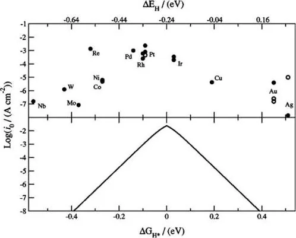
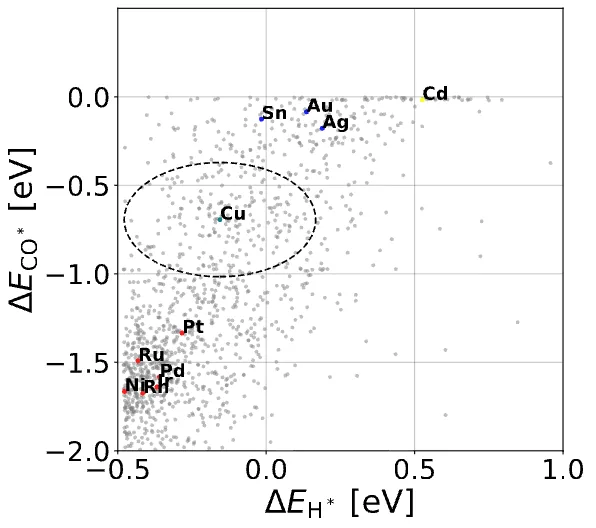
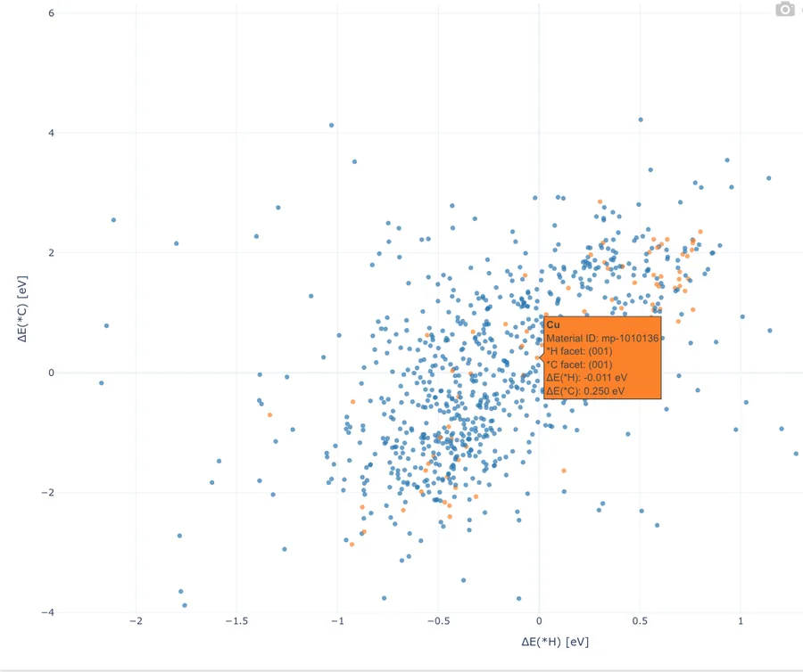
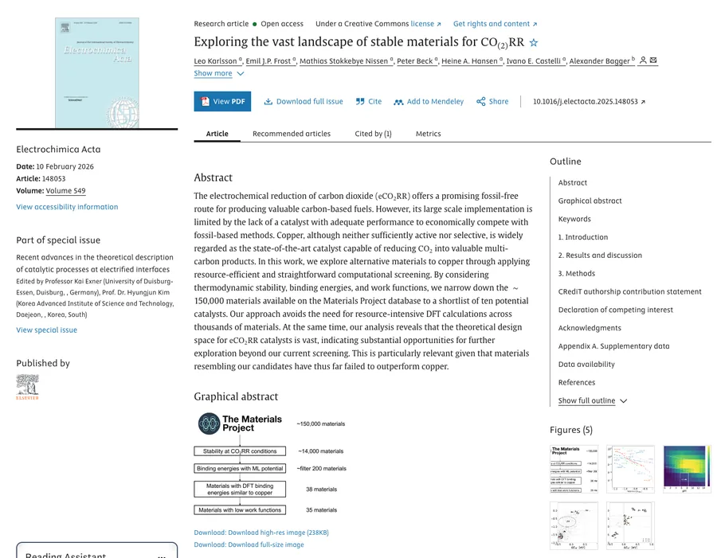
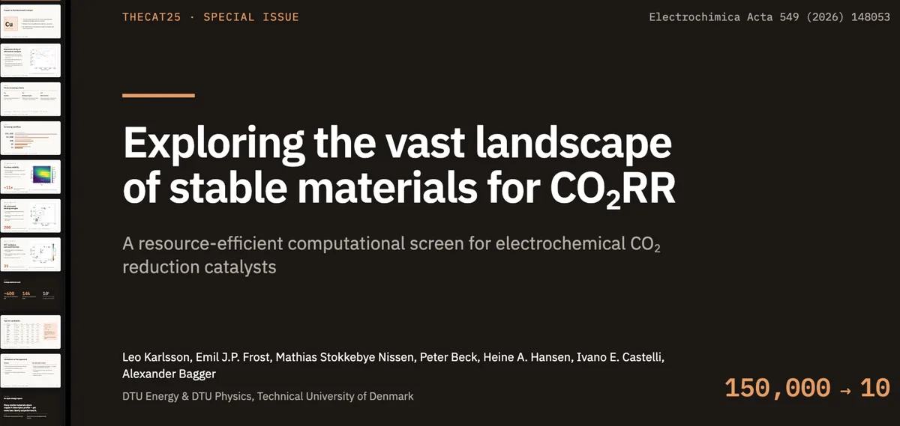

Before you start
Setup
The code and calculation exercises run on Niflheim, so that is where Claude Code goes. Do this before the workshop if you can, so the session can go to the exercises.
How do you want to work on Niflheim?
These are two separate ways in. Both give you the same Claude Code with the same harness, so pick one; you can switch later.
-
Connect to Niflheim
SSH to Niflheim only works from the DTU network. Off campus, connect to the DTU VPN first.
Terminalbashssh username@slid.fysik.dtu.dkVS Code- Install the Remote - SSH extension by Microsoft from the Extensions view (Cmd+Shift+X on macOS, Ctrl+Shift+X on Windows and Linux).
- Open the Command Palette (Cmd/Ctrl+Shift+P), run Remote-SSH: Connect to Host… and enter
username@slid.fysik.dtu.dk. - A new window opens, connected to Niflheim (the host shows in the bottom-left corner). Its terminal (Ctrl+`) runs on Niflheim: use it for the commands in the next steps.
slidis one of several login nodes; others areslid2,sylg,thul,vidandsvol. Log in to the one that matches the partition you will run on (see the login node table). -
Install Claude Code on Niflheim
TerminalIn your Niflheim shell:
bashcurl -fsSL https://claude.ai/install.sh | bashThen log out and in again, and check it with
claude --version.VS CodeIn the window connected to Niflheim, open the Extensions view, search for Claude Code by Anthropic, and install it on the SSH host (the button reads Install in SSH: slid.fysik.dtu.dk). It needs VS Code 1.94 or later.
You need a paid Claude subscription or a Claude Console account. The first time you start Claude Code, sign in through the link it gives you, in your laptop's browser. Install docs · VS Code extension docs
-
Get the workshop harness
The harness is the set of Claude files we prepared for the workshop. It comes as four bundles; for the workshop use
hands-on/niflheim. In your Niflheim shell, copy the bundle's contents into a new, empty folder: your working root, where you will start Claude. Neither option needs git.Download from GitHub · Agentic_codingbashcurl -fsSL https://github.com/haraldsr/claude-in-science/archive/refs/heads/main.tar.gz | tar -xz mkdir -p ~/my-project cp -R claude-in-science-main/Agentic_coding/hands-on/niflheim/. ~/my-project/From Harald's directory on Niflheimbashmkdir -p ~/my-project cp -R /home/cat/harsk/Claude/hands-on/niflheim/. ~/my-project/Replace
~/my-project/with your own folder name. Use a new, empty one: the copy overwrites anyCLAUDE.md,.claude/and.gitignorealready there. The trailing/.copies hidden files such as.claude/too. Adding it to an existing project? Follow Install in the harness README. -
Check the guards
The harness's hooks need
jqon your PATH; without it they refuse every tool call. Run the hook test; every line should say PASS.bashcd ~/my-project && bash .claude/hooks/test_hooks.sh -
Set up the harness with
/setupA fresh harness is locked: until
/setuphas finished, Claude can look around but cannot edit files or run commands, so do this before any exercise./setupasks you about the project, writes what it learns into.claude/rules/project.mdand the project section ofRUNBOOK.md, checks the guards, and then unlocks.TerminalStart Claude in your working root:
bashcd ~/my-project && claudeVS CodeOpen
~/my-projectas the folder (File › Open Folder…) and start Claude from ✻ Claude Code in the status bar.Then send this. We assume no git: your working root is a plain folder, not a git repository, so the prompt says so up front. The harness's auto-commit and stray-file hooks need git and switch themselves off without it.
Prompt/setup This is a new, empty folder for the Claude in Science workshop exercises: calculations with ASE and GPAW submitted to Niflheim, plus plotting and analysis in Python. There is no git repository and I don't want one.
Answer its questions; if you are unsure, take its recommendation. When it asks to release the gate, say yes. Then run
/context:CLAUDE.mdand.claude/rules/should be listed under Memory files. -
Optional: Claude Code on your laptop
For work that doesn't need the cluster, such as exercise 4
Install it locally in a terminal, in VS Code, or in the Claude desktop app. For the harness on your laptop, copy
hands-on/genericinstead ofhands-on/niflheim.bashcurl -fsSL https://claude.ai/install.sh | bashpowershellirm https://claude.ai/install.ps1 | iexbashbrew install --cask claude-code- In the Extensions view, search for Claude Code by Anthropic and click Install. It also works in Cursor.
- Open your working root as the folder, start Claude from ✻ Claude Code in the status bar, and sign in.
or from a terminalcode --install-extension anthropic.claude-code- Download Claude for macOS or Windows from claude.com/download (Linux is in beta) and install it.
- Open it, sign in, and click the Code tab.
- Start a session in your working root.
Hands-on
Exercises
Work through all five in order, theme by theme. Exercise 1 shows why everything after it works the way it does. Ticking an exercise off is saved in this browser only.
Exercise 1 · Using Claude well
Why context is important
Run the same prompt twice: once in an empty folder, and once in your working root with the harness. Then compare and contrast the outputs.
Prompt
Make an fcc111 copper slab and relax it using a cheap calculator
Things to compare
- Which calculator it picked, and whether it said why
- Slab size, vacuum and fixed layers
- Where the files ended up, and how they are named
- Whether it ran the job locally or submitted it
- How full the context is afterwards (
/context)
Exercise 2 · Code & calculations
Recreate an HER volcano
- Use a cheap calculator: EMT, or GPAW in LCAO mode.
- Try to also submit jobs on Niflheim (not too many!).
- Be specific to Claude that you want the calculations redone, not values scraped from the image.
- No need to upload the figure: the prompt gives Claude a link, and it downloads the figure itself.
Starter prompt
Recreate the HER volcano from Nørskov et al., J. Electrochem. Soc. 152, J23 (2005) by running the calculations yourself. The target figure is at https://haraldsr.github.io/claude-in-science/img/volcano.png: download it into this folder with curl and look at it. Take the experimental exchange currents (log i0) from it, but compute ΔG_H* yourself; do not read those off the figure. Use EMT on fcc(111) slabs of Cu, Ag, Au, Ni, Pd and Pt, compute the hydrogen adsorption energy, convert it to ΔG_H*, and plot it against the experimental exchange currents. Submit at most 10 jobs to Niflheim. Make a plan first.
Hints
- EMT only covers Al, Cu, Ag, Au, Ni, Pd and Pt; H is supported but not well described. Expect a rough volcano, then try GPAW LCAO for a better one.
- The paper uses ΔG_H* = ΔE_H + 0.24 eV.
- This touches several files and jobs, so use plan mode (Shift+Tab).

Exercise 3 · Code & calculations
Turn an old plot into an interactive one
Find an old plot and make it an interactive Plotly figure, or vibe code a small website for it. Give Claude the data or the script that made the plot, not a screenshot.


Example prompt
Here is the script and data behind an old figure of mine. Rebuild it as an interactive Plotly figure saved as a single HTML file. Keep the axes and labels, and show the material name, ID and energies on hover.
Exercise 4 · Beyond code
Turn a paper into a conference talk
Choose one of your own or a peer's papers and make it a conference presentation with Claude Design. Tell it the talk length and the audience, and ask for speaker notes.


Exercise 5 · Keep learning
Use Claude Academy
Free, self-paced courses from Anthropic. Good starting points are Claude Code 101 and Claude Code in Action. All courses: academy.claude.com/courses.
Interlude · Context management
What is context
Context is everything Claude has in front of it on a turn: the system prompt, tool definitions, CLAUDE.md, the conversation so far, and every file and tool output it has read. The window has a fixed size. When it fills, the conversation is compacted or you start over.
Same task, two tools: where the context goes
Same research workflow in both tools: two papers, five ASE/GPAW scripts and a folder of calculation outputs.
Context used after each step
Claude Code starts higher (about 26K before you type, for the system prompt, tools and CLAUDE.md) but grows more slowly. Chat is near the limit after step 3 and gets compacted in step 4. Numbers are illustrative estimates; check your own with /context.
| Same input | In chat | In Claude Code |
|---|---|---|
| 2 papersPDF, ~12 pp each | ~50Kfull text + page images | ~1Ka subagent reads them and returns summaries |
| 5 scriptsASE / GPAW | ~20Kpasted in full | ~6Kgrep finds the function; it reads only that file |
| Outputs30 GPAW logs | ~30Kpasted excerpts; the rest won't fit | <1KASE parses them; only energies come back |
| Fix a bugone function | ~5Kwhole script rewritten in the reply | ~0.5KEdit sends just the changed lines |
| New versionsafter each fix | ~5K eachre-pasted to keep chat in sync | 0already on disk |
What carries over between sessions
In chat, continuity lives in your head: you re-upload files and re-explain. In Claude Code, continuity lives on disk.
Claude chat
Session 1Upload papers + scripts, iterate on the setup
Window fillsCompacted to a summary, or you open a new chat
Session 2Starts blank. You re-upload, re-explain, paste a summary
Carries over: project knowledge files and memory (preferences), not where the analysis got to. You carry the context forward.
Claude Code + .md files
Session 1Builds slabs, submits DFT jobs, parses results. Writes progress.
/compact · /clearConversation summarized or cleared
Session 2Reads CLAUDE.md + PROGRESS.md, resumes at the next step
On disk ·
CLAUDE.md · PROGRESS.md · structures/ · calcs/ · analysis/Ask Claude to keep a PROGRESS.md and import it from CLAUDE.md with @PROGRESS.md, so every fresh session starts knowing where the analysis is. CLAUDE.md is loaded at the start of every session and after compaction.
CLAUDE.md · standing rules · you write
# *CO on Cu-alloy (211) steps
- GPAW, RPBE, PW 500 eV, k 4×4×1
- submit with MyQueue on Niflheim
- never overwrite converged .traj
- log each step in PROGRESS.md
@PROGRESS.mdPROGRESS.md · state · Claude updates
[x] k-points + cutoff converged
[x] Clean slabs: Cu, CuAg, CuPd
[ ] *CO, *COH on all sites
Decision: fix bottom 2 layers
(energies change < 0.02 eV)
Next: CO/COH scaling relationInterlude · Model and effort
Model sets how capable; effort sets how thorough
Two settings seem to make the answer better, but they do different things.
Model
Which trained weights answer, and the price per token. Context steers a model; it can't add knowledge to it.
Haikufast, high volume
Mechanical, well-specified work; subagentsSubagent parses 30 GPAW logs, returns energies
Sonnetthe generalist
Everyday coding and writing from clear instructionsWrite the ASE script that builds the (211) slabs
Opusthe expert · start here
Most work; ambiguity, subtle bugs, unfamiliar domainsFind why the CuPd slab's SCF won't converge
Fablethe specialist
Long, multi-step problems smaller models can't finish; highest cost per tokenRun a multi-day alloy screening end to end
Effort
How much work Claude does each turn. Applies to every output token, not just thinking.
lowsimple tasks, subagents
mediumbalanced speed, cost
highcomplex reasoning, coding
xhighagentic runs over 30 min
maxfrontier problems
Default: high on most models; medium on Opus 5.5 and Haiku 5.5.
Higher effort means more…
- thinking before acting
- files read
- checks run (tests, convergence)
- steps before checking in
At lower effort Claude asks you for context rather than investigating. Effort sets how far it's willing to go, not how far it must.
Start with the defaults. Change effort as a standing preference for your kind of work, not task by task.
When the result is wrong: didn't know enough, or didn't try hard enough?
1 · Check the context first
Vague prompt? Missing tool or skill? Rule not in CLAUDE.md? If a task needs more effort than it should, the fix is usually upstream.
e.g. the RPBE and k-point policy was never written down
↓ Context was good, still wrong
Didn't know enough
→ Larger model
Had the context, clearly tried, still wrong. Confidently wrong however much you add.
Keeps misdiagnosing the CuPd SCF failure with logs and GPAW docs in context
Didn't try hard enough
→ Higher effort
Skipped a file, didn't run the check, stopped partway. Most likely if you set effort below default.
Reports “all converged” after reading 5 of 30 logs
Routine for a while → smaller model
Faster and cheaper at the same quality: re-plotting, renaming, formatting tables.
Hard, multi-step → larger can cost less
Higher price per token, but fewer wasted iterations per task.
How to set it · Claude Code
/model pick a model
/effort slider
/effort high set directly
/effort auto back to default
claude --effort low this session onlyCheap subagent · .claude/agents/log-parser.md
---
name: log-parser
model: haiku
effort: low
---In Claude chat: the model menu next to Send, then Effort.
Tips · Sessions and planning
Start fresh or keep going? Plan or just do it?
| When… | Do this |
|---|---|
| Same problem, history still helpsmid-way through one SCF failure | Keep going |
Same task, window filling up/context shows it's mostly old output | /compact keep energies + decisions |
| New, unrelated taskslabs done, now the methods text | /clear; PROGRESS.md carries the state |
| Corrected it twice, still wrongcontext is full of failed attempts | /clear, then a better first prompt with what you learned |
| Plan agreed, ready to buildplan written to PLAN.md | New session that reads the plan |
| Side question or big search“what does fixmagmom do?” | /btw for a question; a subagent for a search |
Plan mode · Shift+Tab
Claude reads and proposes a plan; nothing changes until you approve it.
Plan first when…
- you're unsure of the approach
- the change touches several files
- the code or package is unfamiliar
e.g. move all adsorbate jobs into one MyQueue workflow
Just do it when…
you can describe the change in one sentence.
e.g. rename E_ads to dE_ads in analysis/
Edit the plan before approving: Ctrl+G.
Tips · Skills
Load knowledge only when it's needed
Where should an instruction live? It depends on how often Claude needs it.
| Put it in… | For | e.g. |
|---|---|---|
| CLAUDE.mdevery session | Short facts and rules that always apply | GPAW settings, queue, folder layout |
| Skillonly when relevant | Procedures and reference you reuse | Convergence test for a new surface |
| Hookruns every time | Anything that must never be skipped | Block overwriting converged .traj |
| Subagentown context | Heavy reading; returns a summary | Summarise two DFT papers |
Make a skill when…
you keep pasting the same steps, or a CLAUDE.md section has become a procedure.
Or ask Claude
“Turn what we just did into a skill.”
.claude/skills/gpaw-convergence/SKILL.md
---
name: gpaw-convergence
description: Converge k-points
and cutoff for a new slab.
Use when adding a surface.
---
1. Run scripts/kpt_scan.py
2. Stop at ΔE < 1 meV/atom
3. Plot E(k), log PROGRESS.md
Settings: reference/gpaw.md- Description = what + when. It's how Claude decides to load it.
- Keep it short; details go in reference files, read only if needed.
- Scripts run; only their output enters context.
- Run it yourself:
/gpaw-convergence
Talk
Niflheim with Claude
Claude can write, submit and check jobs for you, but the cluster's rules still apply. Write them into CLAUDE.md so Claude follows them every session.
DTU network only
SSH works only from the DTU network. Off campus, connect through the DTU VPN first.
Login nodes are shared
Processes are limited to 20 minutes of CPU time. Long tasks belong in batch jobs, never on the login node.
Test small first
The xeon24el9_test partition has a 10-minute limit and is for development only. sbatch --test-only checks a script without submitting it.
Pick the login node that matches your partition
| Login node | Partitions |
|---|---|
slid.fysik.dtu.dk | xeon24el9 |
sylg.fysik.dtu.dk, slid2.fysik.dtu.dk | xeon24el8 |
vid.fysik.dtu.dk, thul.fysik.dtu.dk | xeon40el9, sm3090el9 |
svol.fysik.dtu.dk | xeon40el8, sm3090el8 |
hrid.fysik.dtu.dk | xeon56el9, a100el9 |
surt.fysik.dtu.dk | xeon56, a100 |
sara.fysik.dtu.dk | xeon32el9, h200el9 |
fjorm.fysik.dtu.dk | epyc96 |
From the Niflheim Getting Started guide. GPU partitions need group authorization.
Cluster rules for your CLAUDE.md
CLAUDE.md · starting point, adjust to your project
## Niflheim
- Never run calculations on the login node; submit them as jobs
- Submit with MyQueue (mq submit), check with mq ls
- Test new scripts on a short, small job before scaling up
- Ask before submitting more than 10 jobs
- Never overwrite a converged .traj
- Log each submitted batch and its job IDs in PROGRESS.mdTwo habits that keep a workshop cluster happy: tell Claude the job limit up front, and have it check status with mq ls or squeue -u $USER rather than polling in a loop.
Docs: Niflheim users · MyQueue · GPAW · ASE
Talk
marimo notebooks
marimo notebooks are stored as plain Python .py files, so Claude can read, edit and diff them like any other script, and they work well in git.
bash
pip install marimo
marimo edit notebook.py # open or create a notebook
marimo run notebook.py # run it as an app
marimo convert old.ipynb > notebook.pymarimo's own guides cover working with AI assistants and pairing a notebook with an agent such as Claude Code.
Reference
Cheat sheet
Claude Code
- /init
- Generate a starter CLAUDE.md
- /memory
- Edit CLAUDE.md files
- /context
- See what is filling the window
- /compact <keep…>
- Summarise, keeping what you name
- /clear
- New conversation, project memory kept
- /resume
- Go back to an earlier conversation
- /rewind
- Roll code and conversation back to a checkpoint
- /model · /effort
- Change model or effort
- Shift+Tab · /plan
- Plan mode
- Ctrl+G
- Edit the plan before approving
- /btw <question>
- Side question, kept out of the history
- /skills
- List available skills
- /usage
- Session cost and plan usage
Niflheim (Slurm)
- sbatch job.sh
- Submit a batch script
- sbatch --test-only job.sh
- Check a script without submitting
- squeue -u $USER
- Your jobs
- scancel <jobid>
- Cancel a job
- sacct -j <jobid>
- Accounting after a job finishes
- showpartitions
- List partitions
- showuserlimits
- Your limits
MyQueue
- mq submit script.py -R 8:10h
- 8 cores for 10 hours
- mq ls
- List jobs with a state summary
- mq resubmit -i 5 -R 1:1m
- Resubmit job 5 with new resources
- mq remove -s Fd -r .
- Remove failed and done jobs here
Further reading
Links
Workshop
- Workshop harness on GitHubclaude-in-science / Agentic_coding
- Claude AcademyFree self-paced courses
Claude Code docs
Cluster and codes
Papers in the exercises
- Nørskov et al. (2005)Trends in the exchange current for hydrogen evolution, J. Electrochem. Soc. 152, J23
- Karlsson et al. (2026)Exploring the vast landscape of stable materials for CO₂RR, Electrochim. Acta 549, 148053